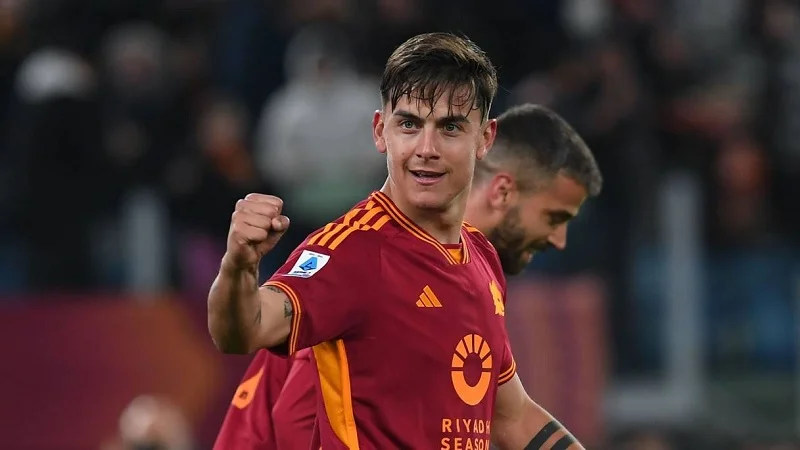

Halo! Ini adalah halaman portofolio idola saya, Paulo Dybala. Ia adalah pemain sepak bola profesional asal Argentina yang dikenal dengan julukan "La Joya" (Sang Permata). Ia sangat saya idolakan karena gaya bermainnya yang elegan, teknik tinggi, dan loyalitasnya di lapangan hijau.
Informasi Tambahan: Saat ini bermain untuk klub AS Roma di Serie A Italia dan merupakan bagian dari skuad Tim Nasional Argentina yang menjuarai Piala Dunia 2022.
Menjadi pemain kunci di lini serang dan membantu klub mencapai final kompetisi Eropa di musim pertamanya.
Meraih 5 gelar Serie A, 4 Coppa Italia, dan mencetak lebih dari 100 gol. Di sini ia mengukuhkan dirinya sebagai pemain bintang dunia.
Memulai petualangan di Eropa dari Argentina dan langsung menarik perhatian klub-klub besar berkat ketajaman kaki kirinya.